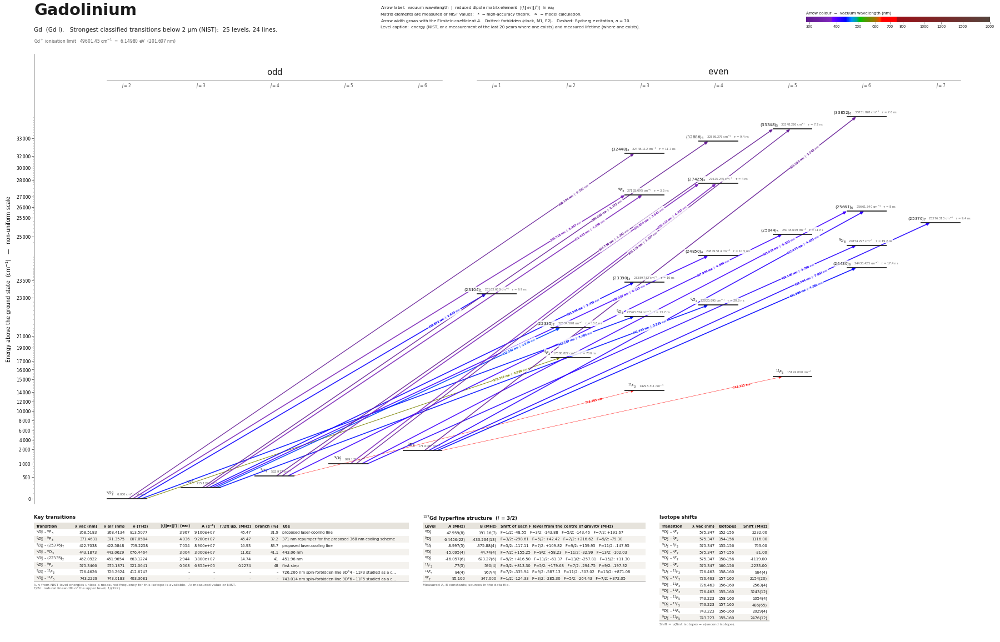

Gadolinium energy level diagram
Energy levels and transitions of neutral gadolinium (Gd I): the 24 strongest classified lines below 2 µm from the NIST Atomic Spectra Database and the 25 levels they connect, each line with its vacuum wavelength, frequency and, for 22 of them, the reduced dipole matrix element derived from the NIST transition rate. Measured lifetimes, transition rates, hyperfine constants and isotope shifts from the literature are included, each with its citation.
Hover a line or a level to isolate it, click to keep it selected. Scroll to zoom, drag to move.

Download: diagram (PDF) diagram (SVG) transitions (CSV) levels (CSV) source code

Key transitions of gadolinium
| Transition | λ vac (nm) | λ air (nm) | ν (THz) | |⟨J‖er‖J′⟩| (ea₀) | A (s⁻¹) | Γ/2π up. (MHz) | branch (%) | Use |
|---|---|---|---|---|---|---|---|---|
| 9D°2 – 9P3 | 368.5183 | 368.4134 | 813.5077 | 3.967 | 9.100e+07 | 45.47 | 31.9 | proposed laser-cooling line |
| 9D°3 – 9P3 | 371.4631 | 371.3575 | 807.0584 | 4.036 | 9.200e+07 | 45.47 | 32.2 | 371 nm repumper for the proposed 368 nm cooling scheme |
| 9D°6 – (25376)7 | 422.7038 | 422.5848 | 709.2258 | 7.054 | 8.900e+07 | 16.93 | 83.7 | proposed laser-cooling line |
| 9D°2 – 9D3 | 443.1873 | 443.0629 | 676.4464 | 3.004 | 3.000e+07 | 11.62 | 41.1 | 443.06 nm |
| 9D°3 – (22335)2 | 452.0922 | 451.9654 | 663.1224 | 2.944 | 3.800e+07 | 14.74 | 41 | 451.96 nm |
| 9D°2 – 9F2 | 575.3466 | 575.1871 | 521.0641 | 0.568 | 6.855e+05 | 0.2274 | 48 | first step |
| 9D°4 – 11F3 | 726.4626 | 726.2624 | 412.6743 | – | – | – | – | 726.266 nm spin-forbidden line 9D°4 - 11F3 studied as a c… |
| 9D°6 – 11F5 | 743.2229 | 743.0183 | 403.3681 | – | – | – | – | 743.014 nm spin-forbidden line 9D°6 - 11F5 studied as a c… |
λ, ν from NIST level energies unless a measured frequency for this isotope is available. A: measured value or NIST. Γ/2π: natural linewidth of the upper level, 1/(2πτ).
157Gd hyperfine structure (I = 3/2)
| Level | A (MHz) | B (MHz) | Shift of each F level from the centre of gravity (MHz) |
|---|---|---|---|
| 9D°2 | 47.959(8) | 191.16(7) | F=1/2: -48.55 F=3/2: -143.88 F=5/2: -143.46 F=7/2: +191.67 |
| 9D°3 | 6.4456(22) | -433.234(13) | F=3/2: -298.61 F=5/2: +42.42 F=7/2: +216.62 F=9/2: -79.30 |
| 9D°4 | -8.997(5) | -375.88(4) | F=5/2: -117.11 F=7/2: +109.82 F=9/2: +159.95 F=11/2: -147.95 |
| 9D°5 | -15.095(4) | 44.74(4) | F=7/2: +155.25 F=9/2: +58.23 F=11/2: -32.99 F=13/2: -102.03 |
| 9D°6 | -16.057(6) | 623.27(6) | F=9/2: +416.50 F=11/2: -61.37 F=13/2: -257.81 F=15/2: +11.30 |
| 11F3 | -77(5) | 590(4) | F=3/2: +813.30 F=5/2: +179.68 F=7/2: -294.75 F=9/2: -197.32 |
| 11F5 | 84(4) | 967(4) | F=7/2: -335.94 F=9/2: -587.13 F=11/2: -303.02 F=13/2: +871.08 |
| 9F2 | 95.100 | 347.000 | F=1/2: -124.33 F=3/2: -285.30 F=5/2: -264.43 F=7/2: +372.05 |
Measured A, B constants; sources in the data file.
Isotope shifts
| Transition | λ vac (nm) | Isotopes | Shift (MHz) |
|---|---|---|---|
| 9D°2 – 9F2 | 575.347 | 152-156 | 2232.00 |
| 9D°2 – 9F2 | 575.347 | 154-156 | 1116.00 |
| 9D°2 – 9F2 | 575.347 | 155-156 | 763.00 |
| 9D°2 – 9F2 | 575.347 | 157-156 | -21.00 |
| 9D°2 – 9F2 | 575.347 | 158-156 | -1119.00 |
| 9D°2 – 9F2 | 575.347 | 160-156 | -2233.00 |
| 9D°4 – 11F3 | 726.463 | 158-160 | 964(4) |
| 9D°4 – 11F3 | 726.463 | 157-160 | 2154(20) |
| 9D°4 – 11F3 | 726.463 | 156-160 | 2563(4) |
| 9D°4 – 11F3 | 726.463 | 155-160 | 3243(12) |
| 9D°6 – 11F5 | 743.223 | 158-160 | 1054(4) |
| 9D°6 – 11F5 | 743.223 | 157-160 | 486(65) |
| 9D°6 – 11F5 | 743.223 | 156-160 | 2029(4) |
| 9D°6 – 11F5 | 743.223 | 155-160 | 2476(12) |
Shift = ν(first isotope) − ν(second isotope).
Listed Gd transitions below 2 µm
| Lower level | Upper level | λ vacuum (nm) | λ air (nm) | ν (THz) | Type | |⟨J‖er‖J′⟩| (ea₀) | A (s⁻¹) | Branching (%) | Source of matrix element / A |
|---|---|---|---|---|---|---|---|---|---|
| 9D°4 | (33348)5 | 304.7364 | 304.6477 | 983.7764 | E1 | 1.341 measured | 1.170e+07 measured | 8.42 | Lawler, Bilty, Den Hartog, J. Phys. B 44, 095001 (2011), Table 6 (printed portion, p. 7) |
| 9D°3 | (32886)4 | 306.0804 | 305.9915 | 979.4565 | E1 | 1.173 measured | 1.080e+07 measured | 10.2 | Lawler, Bilty, Den Hartog, J. Phys. B 44, 095001 (2011), Table 6 (printed portion, p. 7) |
| 9D°2 | (32448)3 | 308.1843 | 308.0949 | 972.7699 | E1 | 0.732 measured | 5.300e+06 measured | 6.2 | Lawler, Bilty, Den Hartog, J. Phys. B 44, 095001 (2011), Table 6 (printed portion, p. 7) |
| 9D°5 | (33348)5 | 309.1276 | 309.0378 | 969.8018 | E1 | 1.037 measured | 6.700e+06 measured | 4.82 | Lawler, Bilty, Den Hartog, J. Phys. B 44, 095001 (2011), Table 6 (printed portion, p. 7) |
| 9D°6 | (33852)6 | 311.2091 | 311.1188 | 963.3153 | E1 | 1.792 measured | 1.660e+07 measured | 12.6 | Lawler, Bilty, Den Hartog, J. Phys. B 44, 095001 (2011), Table 6 (printed portion, p. 7) |
| 9D°2 | 9P3 | 368.5183 | 368.4134 | 813.5077 | E1 | 3.967 NIST | 9.100e+07 NIST | 31.9 | NIST ASD (accuracy n/a) |
| 9D°3 | 9P3 | 371.4631 | 371.3575 | 807.0584 | E1 | 4.036 NIST | 9.200e+07 NIST | 32.2 | NIST ASD (accuracy n/a) |
| 9D°4 | (27425)4 | 371.8541 | 371.7483 | 806.2099 | E1 | 3.941 NIST | 6.800e+07 NIST | 27.2 | NIST ASD (accuracy n/a) |
| 9D°5 | (27425)4 | 378.4134 | 378.3060 | 792.2353 | E1 | 4.757 NIST | 9.400e+07 NIST | 37.6 | NIST ASD (accuracy n/a) |
| 9D°5 | (25661)6 | 405.4785 | 405.3640 | 739.3547 | E1 | 5.150 NIST | 6.200e+07 NIST | 49.6 | NIST ASD (accuracy n/a) |
| 9D°3 | (24850)4 | 405.9366 | 405.8220 | 738.5204 | E1 | 4.115 NIST | 5.700e+07 NIST | 59.9 | NIST ASD (accuracy n/a) |
| 9D°4 | (25044)5 | 407.9856 | 407.8704 | 734.8115 | E1 | 4.664 NIST | 5.900e+07 NIST | 64.9 | NIST ASD (accuracy n/a) |
| 9D°6 | (25661)6 | 417.6716 | 417.5539 | 717.7707 | E1 | 4.431 NIST | 4.200e+07 NIST | 33.6 | NIST ASD (accuracy n/a) |
| 9D°5 | 9G6 | 419.1962 | 419.0781 | 715.1602 | E1 | 3.766 NIST | 3.000e+07 NIST | 57.6 | NIST ASD (accuracy n/a) |
| 9D°6 | (25376)7 | 422.7038 | 422.5848 | 709.2258 | E1 | 7.054 NIST | 8.900e+07 NIST | 83.7 | NIST ASD (accuracy n/a) |
| 9D°3 | (23390)3 | 431.5058 | 431.3845 | 694.7588 | E1 | 3.455 NIST | 4.300e+07 NIST | 43 | NIST ASD (accuracy n/a) |
| 9D°2 | (23104)1 | 432.8319 | 432.7102 | 692.6303 | E1 | 2.499 NIST | 5.200e+07 NIST | 51.5 | NIST ASD (accuracy n/a) |
| 9D°6 | (24430)6 | 440.3087 | 440.1851 | 680.8688 | E1 | 4.562 NIST | 3.800e+07 NIST | 66.1 | NIST ASD (accuracy n/a) |
| 9D°3 | 9D4 | 442.3649 | 442.2407 | 677.7040 | E1 | 3.281 NIST | 2.800e+07 NIST | 58.2 | NIST ASD (accuracy n/a) |
| 9D°2 | 9D3 | 443.1873 | 443.0629 | 676.4464 | E1 | 3.004 NIST | 3.000e+07 NIST | 41.1 | NIST ASD (accuracy n/a) |
| 9D°3 | (22335)2 | 452.0922 | 451.9654 | 663.1224 | E1 | 2.944 NIST | 3.800e+07 NIST | 41 | NIST ASD (accuracy n/a) |
| 9D°2 | 9F2 | 575.3466 | 575.1871 | 521.0641 | E1 | 0.568 measured | 6.855e+05 measured | 48 | Rotter, Carson, Robben, Haynam, Johnson, Isselhardt, Appl. Phys. B 132, 100 (2026), Table… |
| 9D°4 | 11F3 | 726.4626 | 726.2624 | 412.6743 | E1 (intercombination) | – | – | – | – |
| 9D°6 | 11F5 | 743.2229 | 743.0183 | 403.3681 | E1 (intercombination) | – | – | – | – |
Reduced dipole matrix elements follow the convention A = ω³|d|²/(3πε₀ħc³(2J′+1)), with J′ the upper level. Tags show where a number comes from: measured, NIST compilation, high-accuracy theory, or a model calculation.
Gd energy levels
Gd⁺ ionisation limit 49601.45 cm⁻¹ = 6.14980 eV (201.607 nm)
Sources
- Adhikari, Battles, Simien, OSA Continuum 2, 1548 (2019), Table 1
- Den Hartog, Bilty, Lawler, J. Phys. B 44, 055001 (2011), Table 1 (pp. 3-5; time-resolved …
- Lawler, Bilty, Den Hartog, J. Phys. B 44, 095001 (2011), Table 6 (printed portion, p. 7)
- NIST ASD
- NIST ASD level energies
- Rotter, Carson, Robben, Haynam, Johnson, Isselhardt, Appl. Phys. B 132, 100 (2026), Table…
- Unsworth, J. Phys. B 2, 122 (1969), Table 1 (p. 124; atomic-beam magnetic resonance, weak…
Stable isotopes: 155Gd and 157Gd have I = 3/2 (both nuclear moments negative: mu = -0.2591 and -0.3398 nuclear magnetons in the IAEA table); the others have I = 0. Hyperfine convention: E = A K/2 + B [3K(K+1) - 4I(I+1)J(J+1)] / [8I(2I-1)J(2J-1)], K = F(F+1)-J(J+1)-I(I+1) (as printed by Adhikari et al.). Ground-term 9D°J (J = 2-6) hyperfine constants of 155Gd and 157Gd are from Unsworth 1969, Table 1 (scanned PDF pdf/Gd_Unsworth_1969.pdf, numbers checked against the page image, signs as printed); the unsigned LLNL modeling constants for 9D°2 are kept as alternatives and agree in magnitude. The LLNL constants for the 17380.827 level and the 575.19 nm line are modeling inputs printed without signs or uncertainties; treat them as indicative. Lifetimes: all 136 levels of Den Hartog, Bilty, Lawler 2011, Table 1 (pdf/Gd_DenHartog_2011.pdf; parsed from the PDF text, all matched to NIST energy and J within 0.002 cm-1); one common stated uncertainty of ±5 % (unc = 5 % of the value). Directly read values of Xu, Jiang, Svanberg 2003 (pdf/Gd_Xu_2003.pdf, 25 levels) and Wang et al. 2013 (pdf/Gd_Wang_2013.pdf, 27 levels; checked against the page image) are stored as "alternatives" where Den Hartog has the level, and as the entry for 13 levels that only they measured (30394.64, 35794.634, 36191.722, 36394.507 from Xu; 31327.52, 32226.746, 32272.125, 32549.565, 37090.08, 37284.744, 37425.155, 37809.508, 38434.97 from Wang). Values of Marek & Stahnke 1980, Miyabe 1997 and Gorshkov 1983 are sec
Atoms with measured data
- Lithium-632 levels, 85 lines
- Lithium-732 levels, 85 lines
- Beryllium-917 levels, 26 lines
- Sodium-2336 levels, 106 lines
- Magnesium-2418 levels, 61 lines
- Magnesium-2518 levels, 61 lines
- Potassium-3934 levels, 84 lines
- Potassium-4034 levels, 84 lines
- Potassium-4134 levels, 84 lines
- Calcium-4035 levels, 61 lines
- Calcium-4335 levels, 61 lines
- Rubidium-8536 levels, 94 lines
- Rubidium-8736 levels, 94 lines
- Strontium-8740 levels, 70 lines
- Strontium-8840 levels, 70 lines
- Caesium-13331 levels, 79 lines
- Barium-13744 levels, 89 lines
- Barium-13844 levels, 89 lines
- Dysprosium-16339 levels, 55 lines
- Dysprosium-16439 levels, 55 lines
- Ytterbium-17118 levels, 26 lines
- Ytterbium-17418 levels, 26 lines